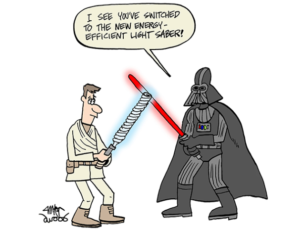
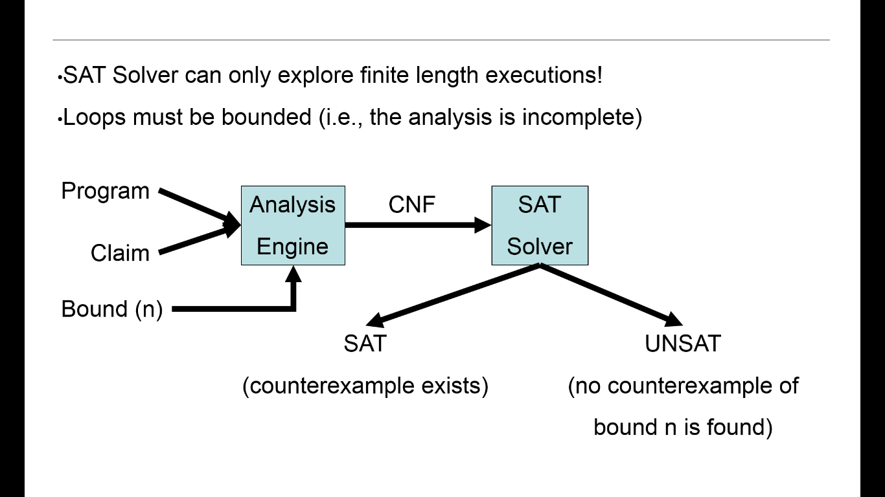
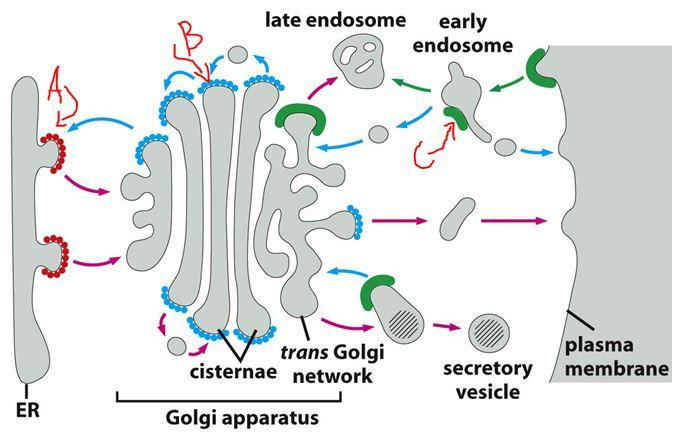
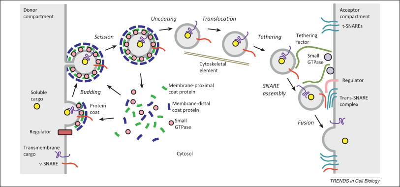

" Model checking & application to Biology "...
by Ankit Under M.Srivas & M.Thattai
I work On Model Checking !
& Application to Biology
Presentation :
- Model checking
- Biological Setup of the Problem
- Ecoding it as a Model Checking problem
- Results ... Future work
Literature Survey
- The machinery and principles of vesicle transport in the cell. Nature Med. 2002,
-
Are cells asynchronous circuits? VMCAI'11 - Timing Robustness in the Budding and Fission Yeast Cell Cycles, PLoS ONE
- Robustness Can Evolve Gradually in Complex Regulatory Gene Networks with Varying Topology
- Alternative Zippering as an On-Off Switch for SNARE-Mediated Fusion. Science 2009, 323
-
Decision Procedures: An Algorithmic Point of View - Handbook of Satisfiability
Projects...
- In collabaoration with Mukund Thattai @ncbs
♥ Cell evolution as Binary circuit.
♥ Biology Coloring problem in cell.
♥ Vesicular traffic Model.

Mukund Thattai

Mandayam.S . Somya Mani
Model Checkers
"Let M be a Kripke structure (i.e., state-transition graph). Let f be a formula of temporal logic (i.e., the specification)."
$$M, s \vDash f$$
Given a model of a system, exhaustively and automatically check whether this model meets a given specification.
Pro & Cons ...
- Automation
- Partial specifications
- Diagnostic counterexamples
- Writing specifications is hard
- State explosion
Tool used CBMC
C bounded Model Checker
Boolean Satisfiability Problem
- SAT is the problem of determining if there exists an interpretation that satisfies a given Boolean formula
- SAT is one of the first problems that was proven to be NP-complete
- CNF An AND of ORs : $(A \vee B) \wedge (\neg B \vee C \vee \neg D) \wedge (D \vee \neg E)$
Simulations VS Model Checking
HelpFul Picture...
Biology Coloring problem in cell
- Given a topology represent Node as compartments and allow vesicle which are subset to flow from each compartment with each edge having some kind of mask.
- Specify inclusion and exclusion set for each mask.
- Implement Logic of Mask
** Steady state condition
Come up with model that minimise masks.
Current Project :
ROTHMAN SCHOEMAN SUDOF
HelpFul Picture...
Abstract RSS model:
- A cell is a set of compartments exchanging vesicles.
- Compartments are neither created nor destroyed.
- Each compartment is in steady state, gain and loss balance.
- Molecules are neither created nor destroyed.
- Molecules move via vesicles of uniform size.
- Identical vesicles must have identical target compartments
Extended e-RRS Model
- An active SNARE pair is necessary / sufficient forfusion
♥ System contains only SNARE activators (eRSS-a).
♥ System contains only SNARE inhibitors (eRSS-i).
♥ SNARE activity is regulated combinatorially (eRSS-c) Model.
Vesicular traffic Model
Nodes (N) represent compartments exchanging molecules M Represnt a node as a bitvector 0b1101
- Directed Edge represent vesicles that are going out to fuse to another compartment.
- Two Required Condition:*
1. Cell has to be in steady State
2. Edges should respect fusion rules.
Fusion Rules ...
- In order to fusion to occur V-Snares present at edge should find the corresponding T-Snares at the target node.
- Driven by Friend/Inhibition- Matrix v * t matrix
Represnts which t snares are required in order to fusion to happen. -
At least one tsnares required for the fusion should be in active based on OnOff Matrix v * t matrix :
States which t snares are in active phase at any node.
- At least one vsnare should pass all constraints and allow fusion to occur. Multiple can.
-
Other constraine is that the tsnares that are required for fusion have not to be present at edge.Else that vsnare will not be considered for a candidate for the fusion. - Self edges / loops not allowed.
Examples :
- N - Color Problem
- Steady state Condition
Results ...
- RSS Model : 3 Connectedness is Sufficient Condition
- RSS with constraints each vesicle is different : 3 connectedness is neccesary and sufficient Condition
- eRSS Model : 4 Connetedness is a Neccesary and sufficient condition